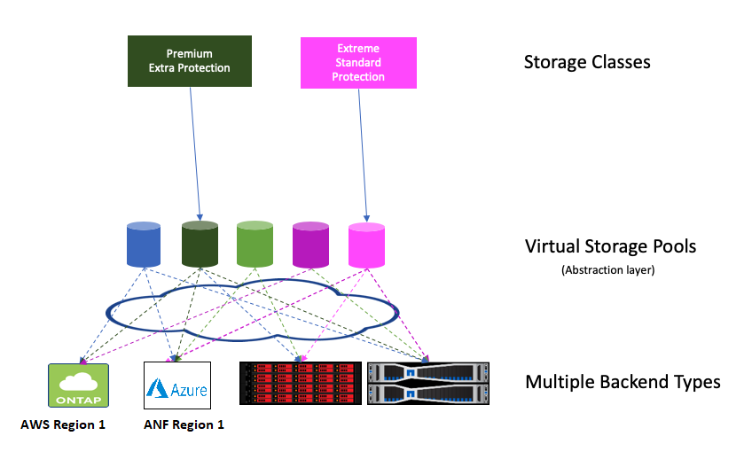

Trident
Virtual storage pools provide a layer of abstraction between Trident’s storage backends and Kubernetes’ StorageClasses. They allow an administrator to define aspects like location, performance, and protection for each backend in a common, backend-agnostic way without making a StorageClass specify which physical backend, backend pool, or backend type to use to meet desired criteria.
Virtual Storage Pools can be defined on any of the Trident backends.

Virtual Storage Pools¶
The storage administrator defines the virtual pools and their aspects in a backend’s JSON or YAML definition file. Any aspect specified outside the virtual pools list is global to the backend and will apply to all the virtual pools, while each virtual pool may specify one or more aspects individually (overriding any backend-global aspects).
Note
When defining Virtual Storage Pools, it is recommended to not attempt to rearrange the order of existing virtual pools in a backend definition. It is also advisable to not edit/modify attributes for an existing virtual pool and define a new virtual pool instead.
Most aspects are specified in backend-specific terms. Crucially, the aspect values are not exposed outside the backend’s driver and are not available for matching in StorageClasses. Instead, the administrator defines one or more labels for each virtual pool. Each label is a key:value pair, and labels may be common across unique backends. Like aspects, labels may be specified per-pool or global to the backend. Unlike aspects, which have predefined names and values, the administrator has full discretion to define label keys and values as needed.
A StorageClass identifies which virtual pool(s) to use by referencing the labels within a selector parameter. Virtual pool selectors support six operators:
Operator
Example
Description
=
performance=premium
A pool’s label value must match
!=
performance!=extreme
A pool’s label value must not match
in
location in (east, west)
A pool’s label value must be in the set of values
notin
performance notin (silver, bronze)
A pool’s label value must not be in the set of values
<key>
protection
A pool’s label key must exist with any value
!<key>
!protection
A pool’s label key must not exist
A selector may consist of multiple operators, delimited by semicolons; all operators must succeed to match a virtual pool.